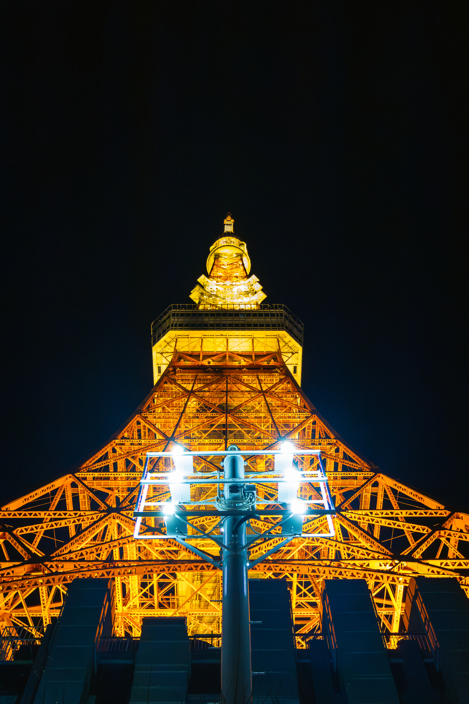
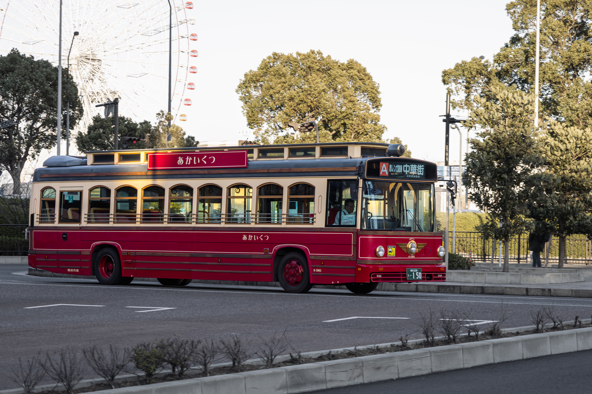
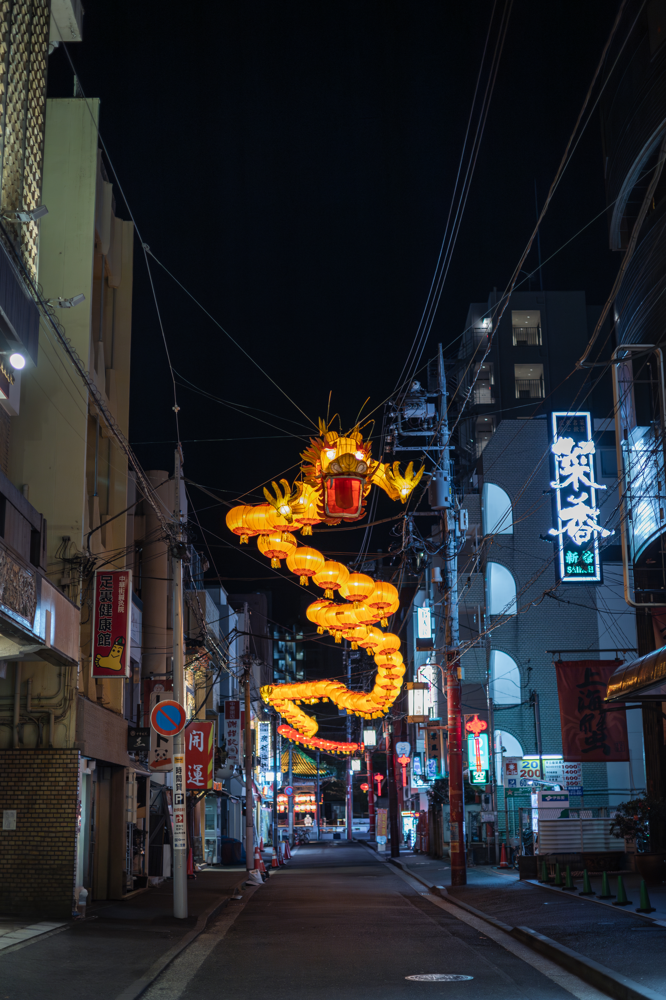
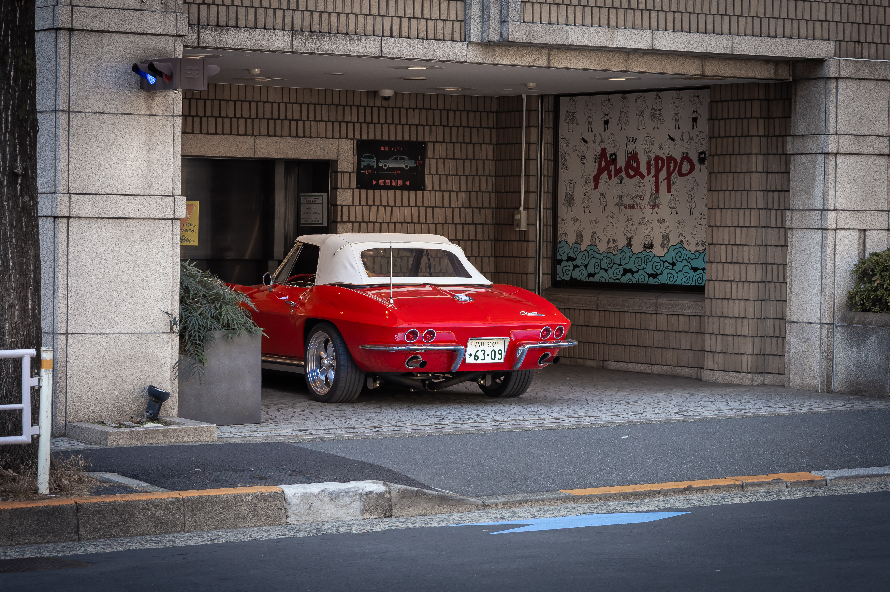

SELECTED PHOTOGRAPHS — 2026
Fragments of the City
在尋常的城市角落，尋找不尋常的瞬間。




BEHIND THE LENS
About Me
我喜歡用攝影記錄城市的日常。 那些不起眼的街道、建築與角落， 往往藏著值得留下的瞬間。
SELECTED PHOTOGRAPHS — 2026
在尋常的城市角落，尋找不尋常的瞬間。




BEHIND THE LENS
我喜歡用攝影記錄城市的日常。 那些不起眼的街道、建築與角落， 往往藏著值得留下的瞬間。